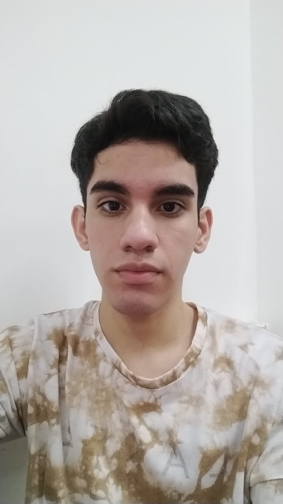

|
Datos personales:
Nombre: Nasadyk FernandoFecha de nacimiento: 15 de marzo de 1990
|
Objetivos:
Conocer nuevos idiomas e incursar en una nueva vida.
Estudios realizados:
Facultad de Ciencas Exactas, Quimicas y Naturales - Analista en Sistemas de Computacion (2021 - Actualidad)Facultad de Ciencas Exactas, Quimicas y Naturales - Licenciatura en Sistemas de Informacion (2021 - Actualidad)
|
Antecedentes Laborales:
Ayudante de cocina y reparacion de celulares
Pasatiempo:
Aprender alguna nuevo idioma, jugar algun videojuego, mirar videos informativos sobre algun tema en especifico
|